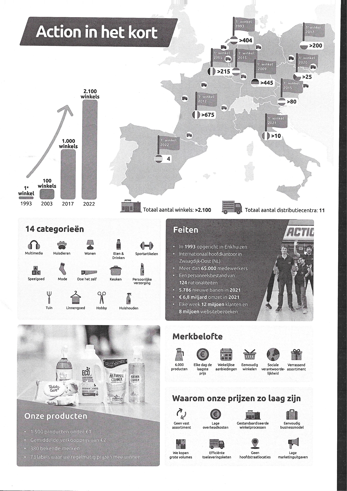
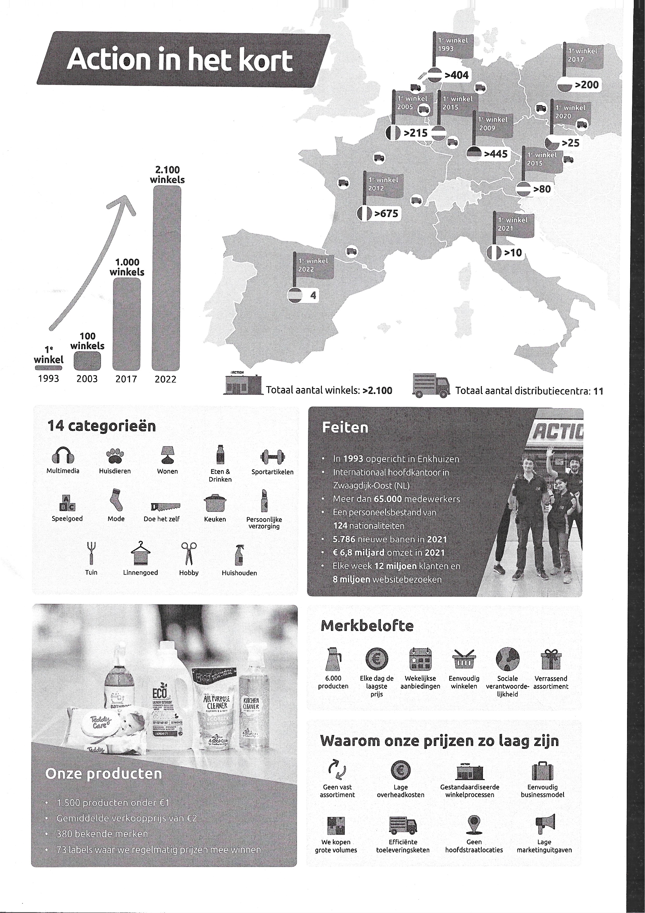

vrijdag 20 januari 2023
Observatietijd van de dag: 9U00 - 11U00
pauzes:
- 12U-12U30
- 15U45-16U
ontvanging
Vele collegas die om 9U of om 11U15 stopten ontvingen me met een knuffel. ze vonden het spijtig dat mijn stage eindigde.
Taak (taken) van de dag
nieuw
Vandaag hebben we met behulp van de zebra etiketjes gemaakt voor de nieuwe producten. Deze hebben we ook per product op de doos geplakt.
bestellen
We hebben producten besteld waarvan een kleine tot geen voorraad van was. De bestelling komt maandag aan. Hierin kunnen ook klantenbestellingen zitten.
De klantenbestelling van donderdag hebben wij ook besteld. De bestelde klantenbestellingen komen op een rijtje in de rij besteld in de kantine.
A-Net onderzoeken
A-Net is het platform dat Action gebruikt voor hun planningen te maken/ pakbonnen te bekijken/ commerciele inkopen en verkopen in te vullen. DIt is eigenlijk een databank met alle belangrijke info van Action.
 

geweldige afscheid
Na mijn werkdag moest ike ven naar de kantine komen daar stonden collega's klaar om mij een afscheid te nemen. Dit was ook omdat tot eind februari er geen studenten meer mogen werken in Action ZOERSEL.
Dit komt doordat Action Zoersel over hun te verbruiken uren zat in 2022.